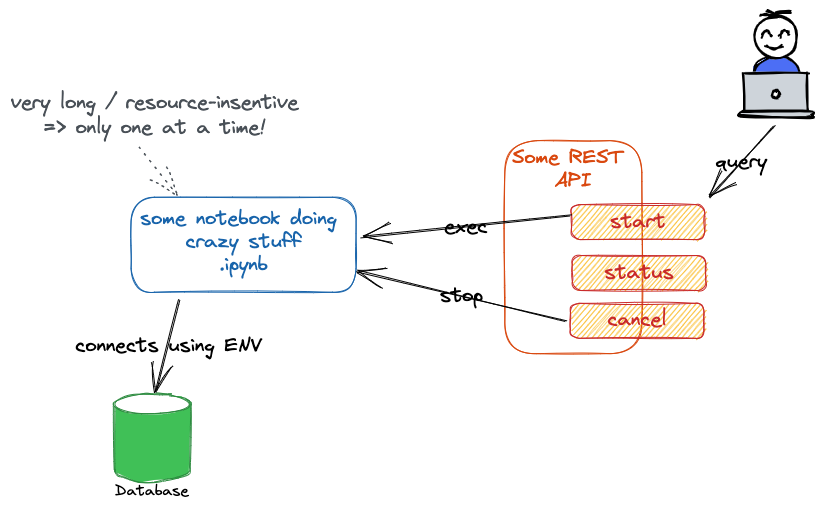

FastAPI + Celery = ♥¶
 Hello there!
Hello there!
Interested in Python FastAPI? Wondering how to execute long-running tasks in the background in Python? You came to the right place!
This little website will go through the basics of Poetry, FastAPI and Celery, with some detours here and there.
Note
I built this website for a talk given at the GDG Fribourg in March 2023. Please keep that in mind: the technologies may have evolved a little. Versions used at the time of writing:
- poetry
1.3.0 - FastAPI
0.95.0 - Celery
5.2.7
I learned about FastAPI and Celery when confronted with a simple yet interesting use case:

I had a Jupyter Notebook that connected to a database, ran some heavy processing on the data (using machine learning and everything) and saved aggregated data back to the database. Since notebooks are great for developing, the requirement was to keep using notebooks for development but to be able to trigger the processing from an API call. The notebook should never be executed twice in parallel though: the API should thus return an error if the notebook was already being executed. Note that the notebook would be provided once at deployment time: it won't change during the lifecycle of the app.
I was initially planning to use a simple Flask app, but soon got into trouble1: how can I (1) run the notebook in a background thread and (2) restrict its execution to one at a time?
The solution will be explained on those pages. If you are only interested in the final implementation, have a look at my nb-runner project on GitHub:
-
for the story, I first switched to FastAPI for its Background Tasks. I thought it would allow me to avoid Celery. I soon discovered it wasn't enough, as I had no control over the number of tasks. I thus ended up learning Celery after all. But the switch was still worth it! ↩